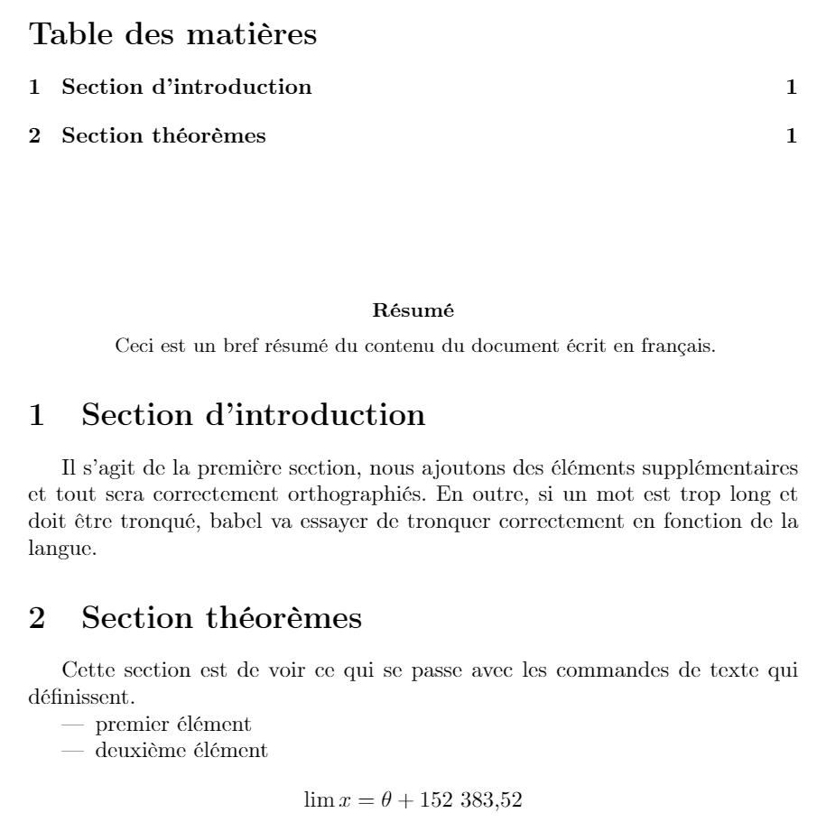

French
Introduction
This article explains how to typeset French text: enabling correct typesetting of accented characters, such as â, ê, î, ô, û etc., and providing support for language-specific features such as hyphenation. If you are looking for instructions on how to use more than one language in a single document, for instance English and French, see the International language support article.
French example using pdfLaTeX
We’ll start with the following pdfLaTeX example which you can open in Overleaf using the link below the code.
\documentclass{article}
% \usepackage[utf8]{inputenc} is no longer required (since 2018)
%Set the font (output) encoding
%--------------------------------------
\usepackage[T1]{fontenc} %Not needed by LuaLaTeX or XeLaTeX
%French-specific commands
%--------------------------------------
\usepackage[french]{babel}
\usepackage[autolanguage]{numprint} % for the \nombre command
%Hyphenation rules
%--------------------------------------
\usepackage{hyphenat}
\hyphenation{mate-mática recu-perar}
%--------------------------------------
\begin{document}
\tableofcontents
\vspace{2cm} %Add a 2cm space
\begin{abstract}
Ceci est un bref résumé du contenu du document écrit en français.
\end{abstract}
\section{Section d'introduction}
Il s'agit de la première section, nous ajoutons des éléments supplémentaires et tout sera correctement orthographiés. En outre, si un mot est trop long et doit être tronqué, babel va essayer de tronquer correctement en fonction de la langue.
\section{Section théorèmes}
Cette section est de voir ce qui se passe avec les commandes de texte qui définissent.
\begin{itemize}
\item premier élément
\item deuxième élément
\end{itemize}
\[ \lim x = \theta + \nombre{152383.52} \]
\end{document}
Open this pdfLaTeX example in Overleaf.
This example produces the following output:

Text files: integers and characters
Any text file, such as a LaTeX input .tex file, is nothing more than a stream of numeric (integer) values which are being used as a mechanism to represent characters of text; consequently, processing a text file involves scanning (reading/processing) a series of integer values. However, an important question arises: which set of characters is actually represented by the integer values contained in a particular text file? In other words, how have those integer values been encoded: what is the correct (intended) "mapping" (encoding) from integers in the text file to the corresponding characters they are supposed to represent?
Text files can be generated within innumerable computing environments: across different countries/continents, using a multitude of different devices, operating systems and editing tools. Originators of text files could, potentially, use or apply different text encodings according to local requirements, such as language, when generating and storing the sequence of integer values chosen to represent the individual characters contained in a text file. This may work well if the generated text files stayed within compatible technical ecosystems, which use the same encoding, but what would happen when those files are transferred to completely different environments—because many text files do not contain any information which indicates the encoding used to generate them.
Clearly, the producer (originator) and consumer (user) of textual data must, somehow, agree on the encoding (mapping) being used, otherwise encoding errors are likely to arise due to mismatches between the integer data in the file and the set of characters it is assumed to represent. In addition to correctly mapping text file integer values to characters, any subsequent visual display of those characters requires some form of font that is capable of providing the data (shapes, or even bitmaps) to output a visual representation of the desired characters.
Input encoding: inputenc, UTF-8 and a change to LaTeX in 2018
Historically, a variety of 8-bit encodings were used to generate/process text files, including LaTeX inputs. To cut short a very long story, the developers of LaTeX created the inputenc package to address encoding issues—allowing text files, created using various encodings, to be transferred between disparate LaTeX installations.
However, over time, users/software developers moved away from multiple 8-bit encodings to using Unicode and its UTF-8 encoding scheme, which became the de facto option for encoding text files. Prior to 2018, to process UTF-8 encoded files LaTeX document preambles included the line
\usepackage[utf8]{inputenc}
Readers might observe that the example above does not include the line \usepackage[utf8]{inputenc} in the document preamble: why is that? This is due to an important change to LaTeX introduced in 2018: a switch to UTF-8 as the default input encoding. Documents typeset with pdfLaTeX, and using UTF-8 encoded text, including those created and typeset on Overleaf, no longer need to include \usepackage[utf8]{inputenc} but is does no harm to do so. For further information see the April 2018 issue of LaTeX News and the Overleaf blog post TeX Live upgrade—September 2019. All text files created on Overleaf are encoded using UTF-8.
Output encoding: the fontenc package
To correctly typeset characters contained within input files, those characters need to be mapped to the appropriate output shapes (glyphs) contained in fonts used to typeset the document. This “output encoding” is handled by another package called fontenc.
To use fontenc include the following line in your document preamble, using an encoding, such as the T1 encoding, which supports accented characters contained in Latin-based languages:
\usepackage[T1]{fontenc}
Using the T1 font encoding, via \usepackage[T1]{fontenc}, has other benefits:
- The default OT1 LaTeX font (“output”) encoding is 7-bit, meaning it can only encode 128 characters and does not include (enable) access to genuine accented character shapes (glyphs) contained in fonts. The
OT1encoding causes TeX engines to “fake” accented characters by typesetting (combining) a base character with an overlaid, and shifted, accent character.
- If the TeX engine has to resort to construction of accented characters, this has implications for copy/paste of text from PDFs: copying text containing constructed accented characters will result in two separate characters being pasted: the base character and the accent character. Using the
T1encoding avoids this.
- Using the
T1encoding, to access genuine accented characters, improves hyphenation.
LaTeX T1 font encoding
The following chart lists the T1 font encoding. It is reproduced from page 22 of the document LaTeX font encodings which is available on CTAN.

Example of copy and paste
The following minimal example, which does not use fontenc, demonstrates issues with copy/paste of text containing accented characters.
\documentclass{article}
\begin{document}
Section théorèmes (OT1 encoding)
{
\fontencoding{T1}\selectfont Section théorèmes (T1 encoding)
}
\end{document}
The first piece of text is typeset using LaTeX’s default OT1 encoding, resulting in “fake” accented characters. The following piece of LaTeX code:
\fontencoding{T1}\selectfont
switches to using the T1 encoding, which results in LaTeX typesetting accented character glyphs. If you copy the text from the PDF produced by the example above you should see something like this:
Section th´eor`emes (OT1 encoding)
Section théorèmes (T1 encoding)
Observe how the OT1 encoded text does not contain actual accented characters, whereas the text encoded with T1 does contain them. The result of copy/paste can also depend on the application being used to view the PDF from which you are copying/pasting text containing accented characters.
Language-specific packages and commands
To extend the default capabilities of LaTeX, providing proper hyphenation and translation of the names of document elements, import the babel package using the french language option.
\usepackage[french]{babel}
As you may see in example using pdfLaTeX, instead of “Abstract” and “Contents” the French versions “Résumé” and “Table des matières” are used.
Notice that the preamble also loads the numprint package
\usepackage[autolanguage]{numprint}
which changes the formatting of numbers written inside the braces of the \nombre{} command.
Hyphenation
The babel package usually does a good job of providing language-specific hyphenation capabilities, but if a particular word does not hyphenate correctly there are packages to assist. For example, you can add the hyphenat package in your preamble:
\usepackage{hyphenat}
\hyphenation{mathéma-tiques récu-pérer}
The second line is a list of space-separated words with defined hyphenation rules. If you want to prevent hyphenation of a specific word, write {\nobreak word} within your document, or include it in an \mbox{word}.
Further reading
For more information see
- Supporting modern fonts with XƎLaTeX
- Typesetting quotations and quotation marks
- International language support
- Chinese
- Arabic
- German
- Greek
- Italian
- Japanese
- Korean
- Portuguese
- Russian
- Spanish
- The not so short introduction to LaTeX2ε
- LaTeX/Internationalization on WikiBooks
- LaTeX/Special_Characters on WikiBooks
Overleaf guides
- Creating a document in Overleaf
- Uploading a project
- Copying a project
- Creating a project from a template
- Using the Overleaf project menu
- Including images in Overleaf
- Exporting your work from Overleaf
- Working offline in Overleaf
- Using Track Changes in Overleaf
- Using bibliographies in Overleaf
- Sharing your work with others
- Using the History feature
- Debugging Compilation timeout errors
- How-to guides
- Guide to Overleaf’s premium features
LaTeX Basics
- Creating your first LaTeX document
- Choosing a LaTeX Compiler
- Paragraphs and new lines
- Bold, italics and underlining
- Lists
- Errors
Mathematics
- Mathematical expressions
- Subscripts and superscripts
- Brackets and Parentheses
- Matrices
- Fractions and Binomials
- Aligning equations
- Operators
- Spacing in math mode
- Integrals, sums and limits
- Display style in math mode
- List of Greek letters and math symbols
- Mathematical fonts
- Using the Symbol Palette in Overleaf
Figures and tables
- Inserting Images
- Tables
- Positioning Images and Tables
- Lists of Tables and Figures
- Drawing Diagrams Directly in LaTeX
- TikZ package
References and Citations
- Bibliography management with bibtex
- Bibliography management with natbib
- Bibliography management with biblatex
- Bibtex bibliography styles
- Natbib bibliography styles
- Natbib citation styles
- Biblatex bibliography styles
- Biblatex citation styles
Languages
- Multilingual typesetting on Overleaf using polyglossia and fontspec
- Multilingual typesetting on Overleaf using babel and fontspec
- International language support
- Quotations and quotation marks
- Arabic
- Chinese
- French
- German
- Greek
- Italian
- Japanese
- Korean
- Portuguese
- Russian
- Spanish
Document structure
- Sections and chapters
- Table of contents
- Cross referencing sections, equations and floats
- Indices
- Glossaries
- Nomenclatures
- Management in a large project
- Multi-file LaTeX projects
- Hyperlinks
Formatting
- Lengths in LaTeX
- Headers and footers
- Page numbering
- Paragraph formatting
- Line breaks and blank spaces
- Text alignment
- Page size and margins
- Single sided and double sided documents
- Multiple columns
- Counters
- Code listing
- Code Highlighting with minted
- Using colours in LaTeX
- Footnotes
- Margin notes
Fonts
Presentations
Commands
Field specific
- Theorems and proofs
- Chemistry formulae
- Feynman diagrams
- Molecular orbital diagrams
- Chess notation
- Knitting patterns
- CircuiTikz package
- Pgfplots package
- Typesetting exams in LaTeX
- Knitr
- Attribute Value Matrices
Class files
- Understanding packages and class files
- List of packages and class files
- Writing your own package
- Writing your own class